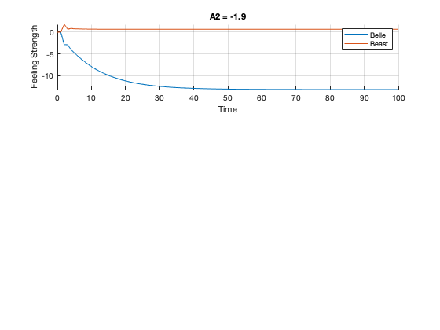
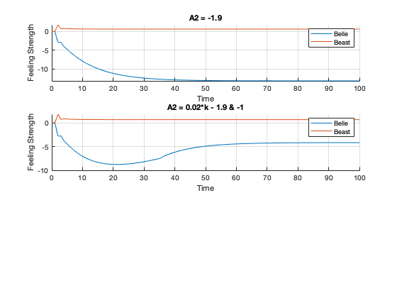
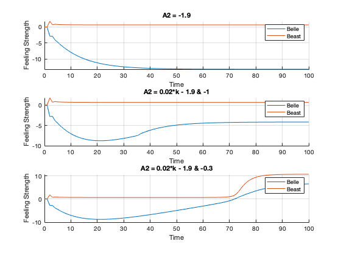

Contents
clear all; clc; close all;
startTime = 0;
stopTime = 100;
T = 1;
N = stopTime/T;
t = linspace(startTime,stopTime,stopTime/T);
alpha_1 = 0.1;
alpha_2 = 0.3;
fx1 = zeros(1,N);
fx2 = zeros(1,N);
x1 = zeros(1,N);
x2 = zeros(1,N);
PART A
for k = 2:N-1
A1 = 1.2;
A2 = -1.9;
R1 = (exp(x2(k)) - exp(-x2(k)))/(exp(x2(k)) + exp(-x2(k)));
R2 = (2*exp(x1(k)) - 2*exp(-x1(k)))/(exp(x1(k)) + 2*exp(-x1(k)));
fx1(k) = -alpha_1*x1(k) + R1 + A2;
fx2(k) = -alpha_2*x2(k) + R2 + A1;
x1(k+1) = x1(k) + (3*T)./(2)*fx1(k) - (T/2)*fx1(k-1);
x2(k+1) = x2(k) + (3*T)./(2)*fx2(k) - (T/2)*fx2(k-1);
end
figure;
subplot(3,1,1)
grid on
hold on
plot(t,x1)
plot(t,x2)
hold off
title('A2 = -1.9')
xlabel('Time')
ylabel('Feeling Strength')
legend('Belle','Beast')

PART B
for k = 2:N-1
A1 = 1.2;
if k<=35
A2 = 0.02*k - 1.9;
else
A2 = -1;
end
R1 = (exp(x2(k)) - exp(-x2(k)))/(exp(x2(k)) + exp(-x2(k)));
R2 = (2*exp(x1(k)) - 2*exp(-x1(k)))/(exp(x1(k)) + 2*exp(-x1(k)));
fx1(k) = -alpha_1*x1(k) + R1 + A2;
fx2(k) = -alpha_2*x2(k) + R2 + A1;
x1(k+1) = x1(k) + (3*T)./(2)*fx1(k) - (T/2)*fx1(k-1);
x2(k+1) = x2(k) + (3*T)./(2)*fx2(k) - (T/2)*fx2(k-1);
end
subplot(3,1,2)
grid on
hold on
plot(t,x1)
plot(t,x2)
hold off
title('A2 = 0.02*k - 1.9 & -1')
xlabel('Time')
ylabel('Feeling Strength')
legend('Belle','Beast')

PART C
for k = 2:N-1
A1 = 1.2;
if k<=80
A2 = 0.02*k - 1.9;
else
A2 = -0.3;
end
R1 = (exp(x2(k)) - exp(-x2(k)))/(exp(x2(k)) + exp(-x2(k)));
R2 = (2*exp(x1(k)) - 2*exp(-x1(k)))/(exp(x1(k)) + 2*exp(-x1(k)));
fx1(k) = -alpha_1*x1(k) + R1 + A2;
fx2(k) = -alpha_2*x2(k) + R2 + A1;
x1(k+1) = x1(k) + (3*T)./(2)*fx1(k) - (T/2)*fx1(k-1);
x2(k+1) = x2(k) + (3*T)./(2)*fx2(k) - (T/2)*fx2(k-1);
end
subplot(3,1,3)
grid on
hold on
plot(t,x1)
plot(t,x2)
hold off
title('A2 = 0.02*k - 1.9 & -0.3')
xlabel('Time')
ylabel('Feeling Strength')
legend('Belle','Beast')

PART D
disp('The third simulation fits the story best because it is the only one where Belle''s feelings cross 0, meaning she actually falls in love with the beast.')
The third simulation fits the story best because it is the only one where Belle's feelings cross 0, meaning she actually falls in love with the beast.